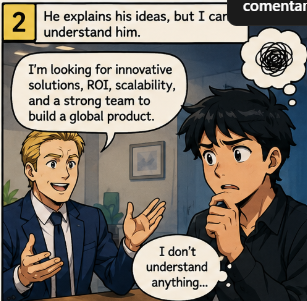
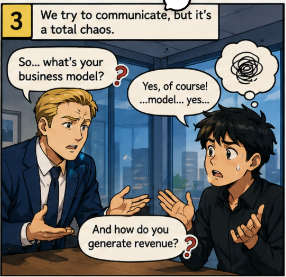
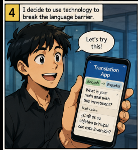

Question 1
What communication problems are evident in the situation?
In the six panels, I observe that they cannot understand each other because they speak different languages.
ENGLISH WORKSHEET · SENA
en esta sesion se pordra observar la historieta con sus 6 viñetas, que habla mas o menor de un problema que se podria presentar en nuestra empresa y como trabjadores de ella.

Comic chapter 1.

Comic chapter 2.

Comic chapter 3.

Comic chapter 4.
Comic chapter 5.

Comic chapter 6.
What communication problems are evident in the situation?
In the six panels, I observe that they cannot understand each other because they speak different languages.
How does this affect the company's image?
This has a significant impact because without good communication with any worker or applicant, there would be no effective labor relations.
What could you say to solve the communication problem?
"I'm sorry, I don't speak English very well."
"Can you write it down, please?"
"Can we use a translation app?"
Have you ever experienced a similar situation?
Yes. Once, a Venezuelan man came into the barbershop and asked for a haircut, but I could not understand him because he spoke very fast.
| # | Position in English | Position in Spanish | Function |
|---|---|---|---|
| 1 | Chief Executive Officer (CEO) | Director Ejecutivo | Leads the company and makes strategic decisions. |
| 2 | Chief Technology Officer (CTO) | Director de Tecnología | Defines the company's technology strategy. |
| 3 | Chief Operating Officer (COO) | Director de Operaciones | Supervises daily operations. |
| 4 | Chief Financial Officer (CFO) | Director Financiero | Manages financial resources. |
| 5 | Engineering Manager | Gerente de Ingeniería | Coordinates development teams. |
| 6 | Project Manager | Gerente de Proyectos | Plans and controls projects. |
| 7 | Product Manager | Gerente de Producto | Manages the product life cycle. |
| 8 | Scrum Master | Scrum Master | Facilitates the Scrum methodology. |
| 9 | Business Analyst | Analista de Negocios | Analyzes customer requirements. |
| 10 | Software Architect | Arquitecto de Software | Designs the system architecture. |
| 11 | Team Leader | Líder de Equipo | Leads and supervises a development team. |
| 12 | Backend Developer | Desarrollador Backend | Programs server-side logic. |
| 13 | Frontend Developer | Desarrollador Frontend | Develops the user interface. |
| 14 | Full Stack Developer | Desarrollador Full Stack | Works on both frontend and backend. |
| 15 | Mobile Developer | Desarrollador de Aplicaciones Móviles | Develops applications for mobile devices. |
| 16 | UI/UX Designer | Diseñador UI/UX | Designs the interface and user experience. |
| 17 | Quality Assurance Engineer (QA) | Ingeniero de Calidad | Tests software to ensure quality. |
| 18 | DevOps Engineer | Ingeniero DevOps | Automates software integration and deployment. |
| 19 | Database Administrator (DBA) | Administrador de Bases de Datos | Manages and protects databases. |
| 20 | Technical Support Specialist | Especialista en Soporte Técnico | Provides technical support to users. |

We use the zero conditional for general truths, facts, routines, and situations that are always or usually true.
If + present simple, present simple
We use the first conditional for real or possible situations in the future and their possible results.
If + present simple, will + base verb
1. If I go to the gym, I feel stronger.
2. If I eat healthy food, I have more energy.
3. If I train regularly, my body gets stronger.
1. If I train tomorrow, I will do a leg workout.
2. If I eat enough protein, I will recover better.
3. If I finish my homework early, I will go to the gym.
1. If I don't sleep well, I don't feel energetic.
2. If I don't drink enough water, I don't feel well.
3. If I don't warm up, my muscles don't feel ready.
1. If I don't train today, I won't complete my workout plan.
2. If I don't eat breakfast, I won't have enough energy.
3. If I don't study English, I won't improve my grammar.
1. What happens if you don't drink enough water?
2. What happens if you exercise regularly?
3. What happens if you eat too much sugar?
1. What will you do if you finish your workout early?
2. What will happen if you train every day?
3. Will you go to the gym if you have free time tomorrow?
Zero Conditional: If something happens, something generally happens. It describes facts and repeated situations.
First Conditional: If something happens in the future, something will probably happen as a result.
The assignment asks for a YouTube video in which I explain how the zero conditional and first conditional are formed and give examples from everyday life.
▶ Watch my video on YouTube